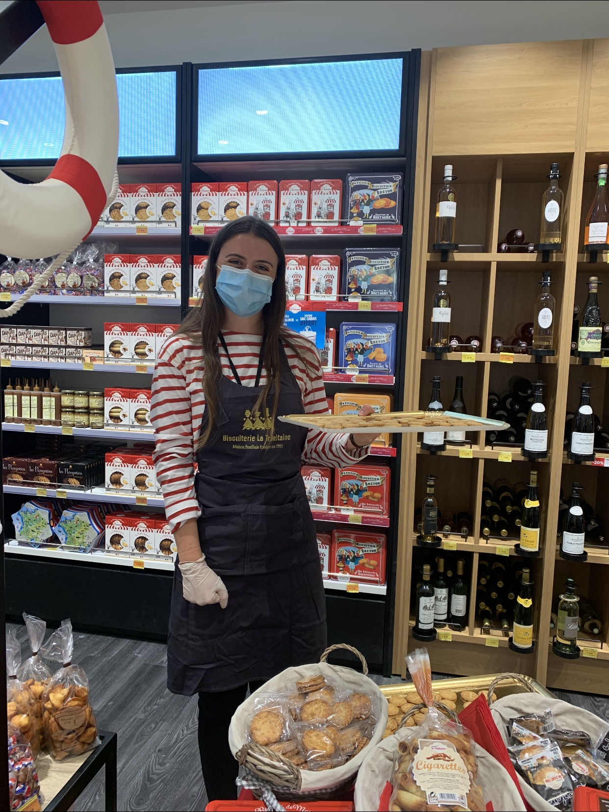
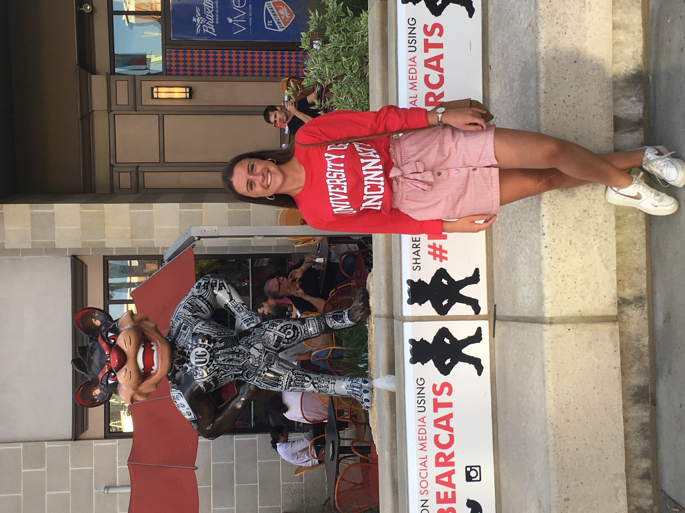

I'm a business student passionate about finance, customer relationship, travels and as a french girl I also love food and fashion. 🌸 You'll be able to find more about me on my page, discover my hobbies and reach out to me.
find me on LinkedInTrading, stock exchange and investment portfolio are so stimulating. I still have a lot to learn on the subject. But I already have my own portfolio and I'm learning everyday. 📊
Tanks to a lot of profesional and social experiences I developed a deep interest in customer relationship. In fact I am currently doing an apprenticeship as a business developer for La Trinitaine 🍪!
Thanks to a few international experiences such as a semester abroad in the USA and a few language exchanges with host families, I started to develop a real interest for foreign languages, discovering other cultures and more specifically international relations. I think I have developed an open-minded spirit
My previous international experiences: